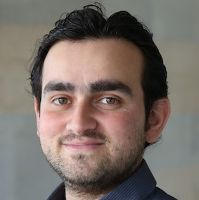

| |
|
|
|
Intelligent Systems Research Centre
Ulster University (Magee Campus)
Seminar Series
Seminars take place from 1-2pm on Wednesdays in person the MS building tea room (MS027) and/or streamed online via Microsoft Teams.
Contact Cian O'Donnell or Louise Gallagher for more information.
Spring 2023
25/01/23: Chethan Pandarinath (Emory University and Georgia Tech)
Webpage
We aim to understand how large populations of neurons in the brain perform computations and represent intention. We use these insights to develop high-performance, robust, and practical assistive devices for people with disabilities and neurological disorders.
Latent variable modeling of neural population dynamics - where do we go from here?
Large-scale recordings of neural activity are providing new opportunities to study network-level dynamics with unprecedented detail. However, the sheer volume of data and its dynamical complexity are major barriers to uncovering and interpreting these dynamics. I will present a machine learning framework we developed, Latent Factor Analysis via Dynamical Systems (LFADS), that enables inference of dynamics from neuronal population spiking activity on single trials and millisecond timescales. I will show how this framework can be applied to data from diverse brain areas, and without regard to behavior. I will also demonstrate extensions that allow recovery of dynamics from two-photon calcium imaging data with surprising precision. Finally, I will discuss our efforts to facilitate comparisons within our field by curating datasets and standardizing model evaluation, including a currently active modeling challenge, the 2021 Neural Latents Benchmark (neurallatents.github.io).
Online seminar.
08/02/23: Conor Houghton (University of Bristol)
Webpage
His research interest is in understanding information processing and coding in the brain and, generally, in mathematical and computational approaches to neuroscience.
Do large language models tells us anything about our own language ability?
In this talk I will, as you might guess, fail to answer this question but I will explain why I think it is an important question to ask. Our linguistic ability is unique to our species and is central to our sense of ourselves. However, recently, large neural network models have been built which can perform complex linguistic tasks, tasks that twenty years ago we would have confidently claimed to be beyond the likely ability of machines. Is language such a difficult, such a special, task that one solution is probably similar to another, allowing us to draw conclusions about our linguistic ability from the behaviour of machines? I will review the question and the evidence and present some of the results of our own experiments.
In-person seminar.
08/03/23: Muskaan Singh (ISRC, Ulster University)
Webpage
Her research interest is centered around Natural language Processing, which includes everything from computational linguistics and fair bits of computer science, software engineering, artificial intelligence, machine learning, deep learning, intelligent systems, with a particular focus on practical applications.
Automatic Minuting: Extended Reality of the Workplace Meeting Solution.
Project meetings are the cornerstone of collaboration. In academia and industry, meetings are vital for coordination, ensuring coherent progress, and steering development direction. Meetings are where the otherwise abstract concept of an institution comes to life. Considering both incredible advances in speech, text, and vision processing on the one hand and the tremendous complications caused by countermeasures of the Covid-19 pandemic, where most meetings went and mostly remained virtual, aims to redefine the reality of small-to-medium-sized meetings. We envisage to building upon the success of my earlier relevant work in this direction to create an extended reality workplace meeting solution.
In-person seminar.
22/03/23: Joshua Tobin (Trinity College Dublin)
Webpage
I am the Trinity postdoctoral research associate for the AIM4Health project, exploring the influence of nutrition, lifestyle, genetic, and socio-economic factors on mental health problems in older people. As part of my work, I develop novel statistical approaches to allow a team of multi-disciplinary researchers to gain new insights from large complex datasets. AIM4Health is a North-South partnership project between Trinity College Dublin and Ulster University.
A co-clustering analysis of mental health inequalities among older people in Ireland
The application of clustering methods to create groups of observations is well understood. The emergence of high-dimensional data sets with a huge number of features motivates co-clustering techniques, simultaneously producing groups of observations and features. By grouping the data set into blocks (the crossing of an observation-cluster and a feature-cluster), these techniques can better summarize the dataset and its inherent structure. The Multiple Latent Block Model (MLBM) extends the well-known latent block model method to co-cluster mixed type datasets. We here apply the MLBM to the Trinity-Ulster and Department of Agriculture study survey, which contains questions on sociodemographic, clinical, biochemical, nutritional, and lifestyle factors for older adults on the island of Ireland. We present the results of clustering the questions related to each factor independently. Subsequently, we introduce a novel integrative co-clustering method, that allows for the simultaneous clustering of subjects and features in a multi-view dataset where each view marginally follows a latent block model. In the case of two views, the dependence between them is captured by two cluster membership matrix parameters and we aim to learn the structure of these matrices. We develop a penalized likelihood approach to estimate the sparsity pattern of the cluster membership matrix and demonstrate the performance of this method through simulations.
In-person seminar.
19/04/23: Claire Gillan (Trinity College Dublin)
Webpage
The Gillan Lab at Trinity College Dublin uses cognitive neuroscience to better understand, predict and treat mental health problems, tackling issues that are psychiatric, developmental, neurological and associated with advancing age.
Using the Internet for Longitudinal, Predictive and Treatment-Oriented Research
Cross-sectional research has helped us identify candidate mechanisms that may put people at risk for mental health problems and could be promising targets for treatment. But despite considerable investment, clinical translation of core findings has not happened. This is likely because without prospective data, the immediate clinical value is simply not there. In terms of slower kinds of translation - for example, where basic insights inform novel treatments - this has also not meaningfully occurred, possibly because correlation and causation cannot be distinguished in cross-sectional designs. Why then do we continue to produce so much cross-sectional research? The answer, of course, is that appropriately powered longitudinal, and treatment-oriented research is much more challenging to conduct; It is slow, expensive, and difficult to do outside of consortia. In this talk, I will highlight how Internet-based research methods are changing the research landscape, facilitating rich and repeated assessments of individuals over time, in their real lives and during treatment. From archives of language data on social media, to experience-sampling of mood and cognition in daily life, to following patients through weeks of digital therapy. I will make the case that the proliferation of online methods is opening new doors for psychiatry research, dramatically increasing the scale and scope of what is possible.
Online seminar.
27/04/23: Seán Froudist-Walsh (University of Bristol)
Webpage
Cognition: I investigate how areas across the brain work together to produce cognition. Anatomy: I study how subtle changes to anatomy across brain areas can lead to the sudden emergence of new function, or dysfunction. Neural networks: I develop brain-inspired neural network models, to link from neural circuit interactions to dynamical patterns of activity across the cortex and behavior.
Gradients of receptor expression shape distributed cognitive functions
Neural circuit dynamics and cognitive functions depend on synaptic interactions mediated by receptors. However, the spatial distribution of receptors has been largely ignored in theories of cortical function. I will speak about our recent work examining how receptor expression shapes neural dynamics across the cortex and distributed cognitive functions. By constraining multi-scale neural network models with the real receptor and connectional anatomy, we are beginning to understand how and why functions are distributed across specific cortical networks. This approach offers a link across scales of neuroscience, and makes several predictions for the new large-scale era of experimental neuroscience.
In-person seminar.
17/05/23: Scott Fischaber (Analytics Engines)
Webpage
Data Ethics and its Application to AI Systems
There is a growing lack of trust from the public in how data is collected, shared and used, with governments around the world increasingly looking to provide guidance and regulate on the responsible usage of data for the betterment of society. This lecture looks at tools and techniques for assessing the ethical usage of data and how it can be used to unlock the value from data while minimising harmful impacts. We will discuss the place data ethics has in development of modern systems and look at the rapid development of AI systems from a data ethics perspective. With data being the foundation on which AI models are built, ensuring that the data used to train these models is trustworthy and built on solid ethical principals is paramount.
In-person seminar.
31/05/23: Abdoreza Asadpour (ISRC, Ulster University)
Webpage
Towards a Dynamic Causal Model for the Effects of Tinnitus on Brain Event-Related Potentials and Decision Confidence.
Tinnitus (ringing in the ear) is a common symptom with a prevalence of approximately 15% in Europe, of which 2% suffer from severe tinnitus. Subjective tinnitus is perceived without the presence of an external cause, whereas objective tinnitus has known causes. Despite the prevalence of subjective tinnitus and the significant burden it places on the healthcare system, its underlying neural process and an effective treatment method remain elusive. Prior neurophysiological research suggests that tinnitus is associated with impairment in the cochlea-to-cortex auditory pathway. It may also cause cognitive abnormalities, particularly in attention and memory. Consequently, a thorough investigation of functional changes in the auditory system in tinnitus and the development of a model for tinnitus appear essential. Analysis of brain signals at various stages, from the brain stem to the cortex, and identification of their effective connectivity may shed light on the development of an effective treatment for this widespread symptom.
In-person seminar.
28/06/23: Shirin Dora (Loughborough University)
Webpage
My research interests include energy-efficient AI for edge-computing. In particular, I focus on bio-inspired mechanisms for learning which include spiking neural networks and predictive coding. On the applied side, I am interested in research on autonomous cars and UAVs.
Lifelong Learning using Spiking Neural Networks
Deep learning has made tremendous progress in the last ten years but its high computational and memory requirements impose challenges for its expanding application base, particularly for edge devices. Further, leveraging the information present in the differential data seen by edge devices requires development of new efficient distributed learning algorithms. There has been some progress in lowering memory requirements of deep neural networks (for instance, use of half-precision) but there has been minimal effort in exploring alternative efficient computational paradigms. Inspired by the brain, Spiking Neural Networks (SNN) provide an energy-efficient alternative to conventional rate-based neural networks. However, SNN architectures that employ the traditional feedforward and feedback pass do not fully exploit the asynchronous event-based processing paradigm of SNNs. In my talk, I will present recently developed methods within my group that provide energy and memory efficient alternatives for lifelong distributed learning and generative modeling. These methods rely on biological plasticity mechanism of predictive coding to develop networks that can simultaneously perform multiple tasks like classification and generation.
Online seminar.
Winter 2022
11/11/22: Mahnaz Arvaneh (University of Sheffield)
Webpage
Implicit brain-machine interactions in navigation and target identification tasks.
There is a performance bottleneck in many brain-computer interfaces, as users are required to control each low-level action in order to achieve a high-level goal. For example, users may need to consciously generate brain signals to move a cursor, prosthesis, or assistive robot, step-by-step to a desired location. This places a high mental workload on the user. Recent studies have shown the possibility of using "cognitive probing" to reduce the mental burden of current BCIs. This is achieved by monitoring brain signals generated spontaneously while users merely observe the machine's actions, and using these signals as feedback to help the machine perform the desired task. These studies have mostly been based on distinguishing correct actions from erroneous ones, by detecting error-related potentials. In this talk we will discuss the possibility of obtaining more detailed information from passive brain signals than simply whether an action was correct or erroneous. Bringing these advances together, we will present the foundation of a new frame-work for detailed implicit communication between brain and machine, by embedding the real-time EEG classification outputs in a dynamic probabilistic model of the most likely target loci based on the previous actions of the robot. This facilitates semi-autonomous robot control, through a more efficient and user-friendly brain-
machine interaction.
Online seminar.
23/11/22: Saugat Bhattacharyya (ISRC, Ulster University)

Webpage
Augmenting Decision-making capabilities using Brain-Computer Interfacing Technology.
Billions of decisions are made every day in the world. Many of these decisions, particularly in the armed forces, are critical, making a mistake resulting in extremely adverse outcomes, including loss of lives. Groups typically can make better decisions than individuals. However, in some circumstances (e.g., in the presence of a strong leader), communication between members can have a detrimental effect on decision quality. Neural signals have been reported to be related to decision-making processes and it is shown to negate the effects of communication bias in decisions. However, brain signals, especially one recorded using Electroencephalography (EEG), are extremely noisy, which makes it very hard to reliably provide information on (or aid) individual decisions. Nonetheless, it is plausible to think that collective decisions could be aided and enhanced by integrating decisions and their neural correlates across the members of a group.
In this talk, Dr Saugat Bhattacharyya will give an overview of how group decision-making aided by collaborative Brain Computer Interfaces (cBCIs) is better than traditional means of making group decisions and how it may be suited for circumstances where decisions are based on a rapid and accurate assessment of the environment and where fast reactions are needed. This talk will cover the journey and achievements of cBCIs supported decision support system over the last few years and will briefly introduce concepts on teaming humans with machines (virtual humans) to augment critical decision-making by building trust and co-operation between the two entities.
In-person seminar.
07/12/22: Pingfan Song (University of Cambridge)
Webpage
Trustworthy AI for medical and health research.
Artificial Intelligence (AI) systems are increasingly being deployed in society, it is critical to ensure that these systems are trustworthy, in particular in high-stake real-world applications, such as the medical and health domains. There has been growing interest to develop and deploy AI models and algorithms that are not only accurate, but also interpretable/explainable, fair, privacy-preserving, causal, and robust. This talk will focus on frontier research in this timely, trending, and important cross-disciplinary research domain, and provide an overview to cutting-edge knowledge, technology, and findings.
Online seminar.
|